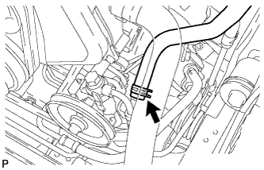
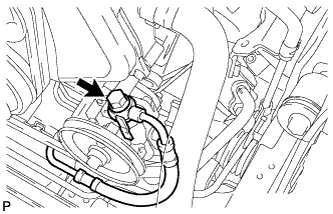
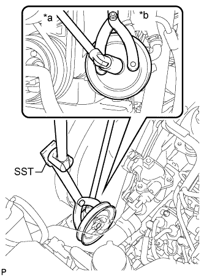
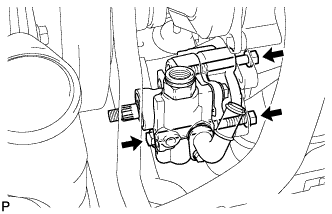

ЛОПАСТНОЙ НАСОС (для моделей с 5L-E) > СНЯТИЕ |
| 1. СНИМИТЕ ПОЛИКЛИНОВОЙ РЕМЕНЬ ЛОПАСТНОГО НАСОСА |
 |
Ослабьте болт и гайку и снимите поликлиновой ремень.
| 2. ОТСОЕДИНИТЕ ШЛАНГ № 1 СОЕДИНЕНИЯ МАСЛЯНОГО БАЧКА С НАСОСОМ |
|  |
Сдвиньте фиксатор и отсоедините масляный шланг.
| 3. ОТСОЕДИНИТЕ НАГНЕТАТЕЛЬНЫЙ ПАТРУБОК В СБОРЕ |
|  |
Снимите пустотелый болт и прокладку и отсоедините трубку подачи топлива.
| 4. СНИМИТЕ КОЖУХ ВЕНТИЛЯТОРА |
Снимите кожух вентилятора (Нажмите здесь).
| 5. СНИМИТЕ ШКИВ ЛОПАСТНОГО НАСОСА |
|  |
С помощью SST отверните гайку и снимите шкив лопастного насоса.
| *a | Поверните |
| *b | Удерживайте |
| 6. СНИМИТЕ ЛОПАСТНОЙ НАСОС В СБОРЕ |
|  |
Выверните 2 болта, отверните гайку и снимите лопастной насос.